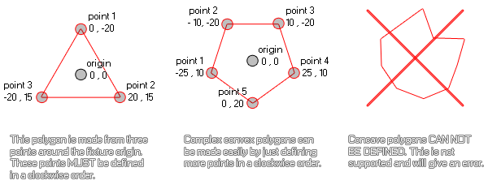

physics_fixture_add_point(fixture, xpos, ypos)
| 参数 | 描述 |
|---|---|
| fixture | the index of the fixture |
| xpos | the x position of the point (relative to the fixture origin for polygon shapes) |
| ypos | the y position of the point (relative to the fixture origin for polygon shapes) |
返回： N/A（无返回值）
This function defines the points of a polygon which has
previously been set to the fixture using either physics_fixture_set_polygon_shape
or it can be used to add points to a chain of edge fixtures using
the function physics_fixture_set_chain_shape.
For a polygon shape, the points are relative to the origin of the
fixture, with the 0,0 position of the x/y axis being the centre,
and the subsequent coordinates being calculated as usual in
GameMaker Studio 2 with down/right being +x,+y and up/left
being -x,-y. Here is an illustration to help you visualise this
process:

As you can see, any simple convex polygon can be modelled in this way, but concave polygons are not supported at this moment. Finally, to close the polygon, you must bind the fixture to an instance. You should note too that you must also have at least three points defined for your polygon before binding it to an instance or you will get an error and that adding a point to a fixture that does not have a polygon shape set previously will also cause an error. Note too that the maximum number of points permitted for a fixture is eight.
For chain shapes (which are simply a series connected edge shapes) this function will set a point as a "connection" to chain the edges together at. Therefore you need to have defined at least two points before binding the fixture to the instance otherwise you will get an error. However, unlike for polygons, you are not limited to a maximum of eight points and can add as many as you require to create the chain and the points are defined in actual room coordinates, rather than relative to the instance.
physics_fixture_set_polygon_shape(fix_Ship);
physics_fixture_add_point(fix_Ship, 0,0);
physics_fixture_add_point(fix_Ship, -40, 100);
physics_fixture_add_point(fix_Ship, 40, 100);
The code above will apply a polygon shape to the fixture indexed in the variable "fix_Ship" and then defines three points to create a triangular shape.